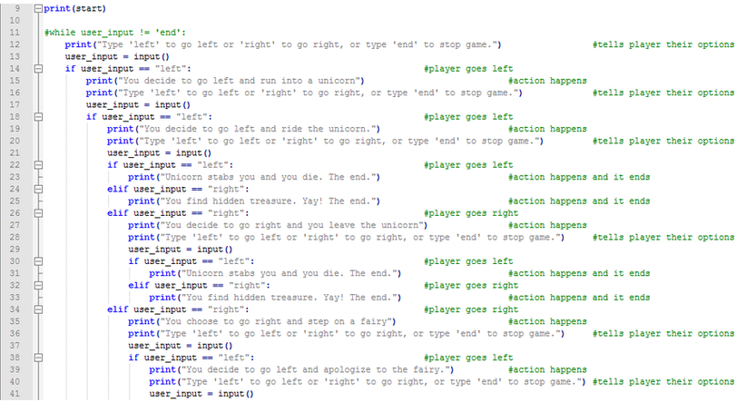
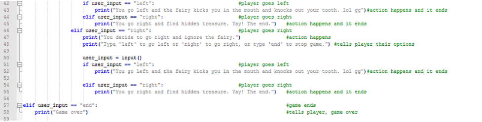

Work on this lab individually or in pairs. Use Python to write a text adventure game. A text adventure game is a story where the person reading gets to decide what the characters do
1. Use variables and strings to write your own Mad Libs. 2. Use the input function to ask the player for words. 3. Use the print function to write your Mad Libs to the screen Use conditionals (pictured as diamonds in the flowchart) to tell different stories depending on what the person playing your game decides. The start of the story has already been given to you and the first conditional statement has been written. ● Write what happens if the player chooses to go left or right. ○ You can make the descriptions as concise or as detailed as you want! ● Write additional conditional statements to let the player make the next decision. ○ You get to decide what those choices will be! ○ Write a description for the outcome of each choice. ● End the story by wrapping everything together. Before you begin programming, it may help to create a flowchart for your program, to map out the different choices and paths a player can take.
Here is the background story behind the objective.
 Above is the code with comments about each step.
Errors occured in the coding process when trying to figure out the if statements. I did not put a loop in the beginning to have the text adventure continue continue. I will work on that part in the future.